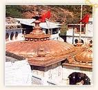
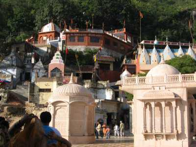
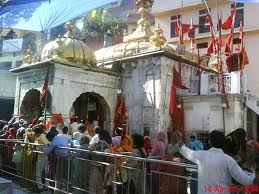
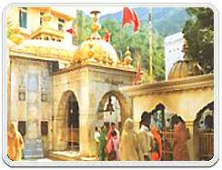
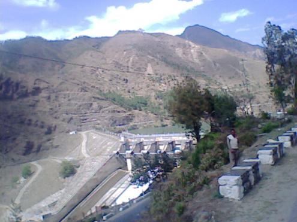
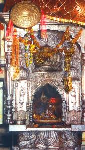
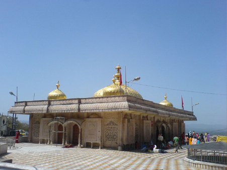
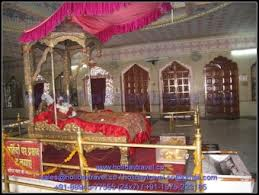
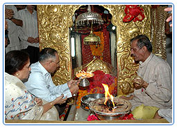

WELCOME TO
KANGRA VALLEY
HISTORY
Jawala Ji temple is one of the 51 Shaktipeeths of India. Jawalaji Temple is one of highly venerated shakti temple in india. It is situated in the lap of Shivalik range of Kangra valley called "Kalidhar". This is believed to be the first ever temple built by the Pandavas. Jawala ji is a Devi Temple Dedicated to the "GODDESS OF LIGHT", located in Jawala Mukhi, district Kangra of Himachal Pradesh.
Sati's tongue is believed to have fallen at the very place where Jwalaji Temple is now situated. The tongue of Sati is represented by Holy Flame or Jwala that is perpetually burning. The flames come out from nine different rocks in the temple.Jawala Ji has an unique characteristic of perpetual flames emanating from the rock at temple site being considered the manifestation of Goddess.Jawala Ji as a center of faith is unparallel and unique. There is no deity or idol that is worshiped. Jawala Ji is a great heritage centre for not only the people of Jawala Mukhi, Kangra or Himachal Pradesh but of the whole world. During March to April and September to October every year colourful fairs are held during the Navaratra celebrations.
